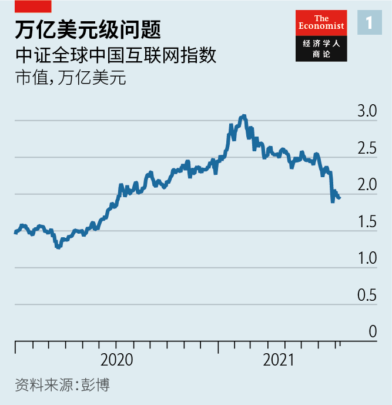
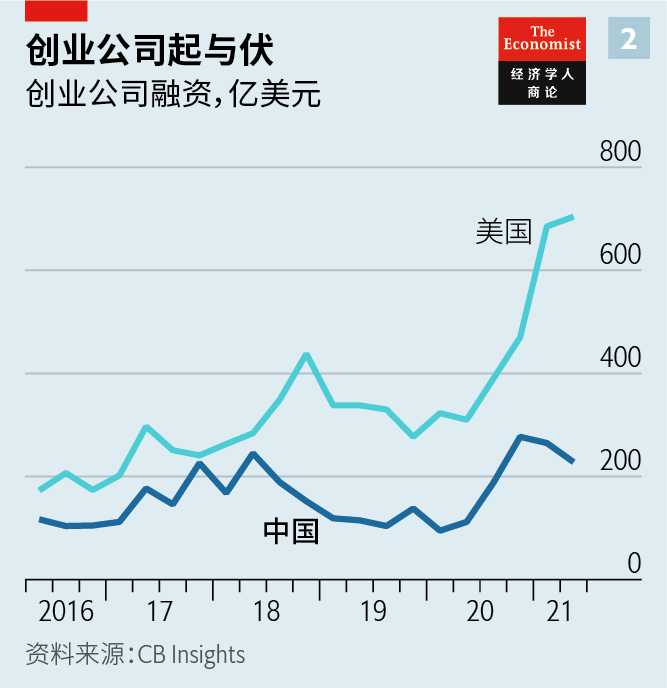
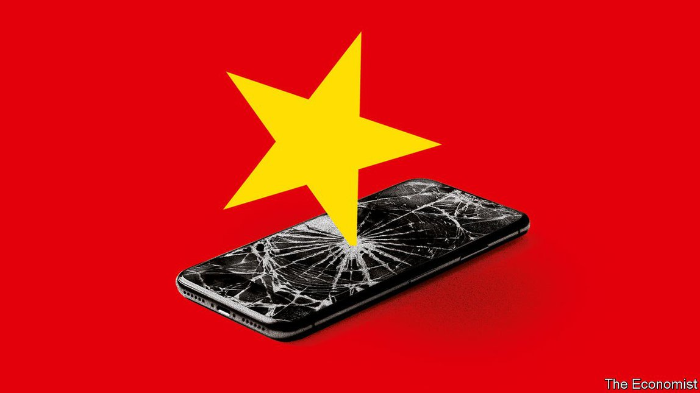
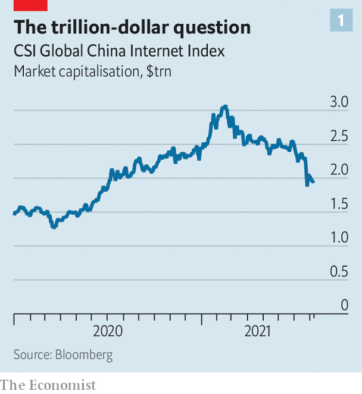
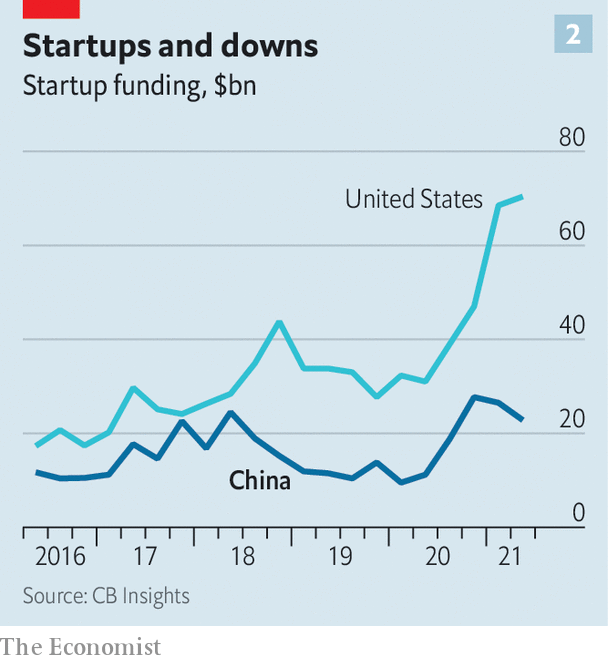

2021-08-25T16:08:13+00:00
中国的资本主义
中国想要什么样的科技？
党对科技产业的总体规划轮廓显现【深度】

愿景日渐清晰。再过十年左右，如果能如共产党所愿，中国将成为具有中国特色的科技乌托邦，其中云计算、人工智能（AI）、无人驾驶汽车和国产高精尖芯片等“深科技”应有尽有。电子商务领域的阿里巴巴或支付和娱乐领域的腾讯等现有科技巨头将会继续存在，但不会再那么神气十足，也不会再有那么高的利润。遏制它们市场支配力的政策会将其部分利润重新分配给较小的商家和应用开发者，还有它们的员工。二线城市将拥有自己的科技产业来提供本地化服务，与实力被削弱的巨头竞争。在中央政府的监视下，数据将在系统中脉动，供大大小小的公司使用。中国的互联网将加强其威权控制。
国家主席习近平想要实现这一愿景的方式也变得更清晰了。除了大谈深科技之外，还要杀一杀那些技术没那么“深”的公司的锐气。过去九个月，中国的监管机构出手整治中国大热的科技圈——尽管这个行业产生了世界一流的创新技术和惊人的股东价值，但已不再被认为契合国家目标。8月11日，政府表示未来五年将加强对各类科技企业的监管。这一切使得自2月以来，中国最热门的那些科技集团的总市值蒸发了至少一万亿美元（见图表1）。
投资了中国互联网公司的外国投资者正在撤退。中国本国的投资者也很焦虑。自2月中旬以来，追踪在香港上市的中国科技股和在纽约上市的更多样的中国公司的指数下跌了40%至45%。那又有什么要紧的。事实上，这可能都是计划的一部分。在MSCI中国指数中，消费互联网公司至少占大盘股的40%。和苹果、Alphabet、亚马逊、Facebook、奈飞（Netflix）这些美国同类公司一样，中国的互联网企业为股东赚了很多钱。但共产党似乎认为，它们获取利润靠的是滥用市场支配力、剥削员工和腐蚀思想。
“伤亡”名单也是一份中国科技名企录，其中包括：脱胎于阿里巴巴的蚂蚁集团，其370亿美元的IPO在正式挂牌前几天被叫停；滴滴，在纽约上市融资44 亿美元后没几天，它的应用就从中国的各个应用商店下架；腾讯，被监管机构以传播色情内容和不公平市场行为为由罚款，并被责令解除独家音乐版权；在线教育行业，上个月基本上被禁止盈利。
而且这份名单还在变长。据报道，中国的反垄断机构正准备对外卖超级应用美团处以10亿美元罚款。8月9日，英国《金融时报》报道称，由于投资者担忧监管机构的打压，在线娱乐集团网易决定搁置其音乐流媒体业务在香港的IPO计划。
哪些公司可能成为赢家就没那么明确了。副总理刘鹤近日的讲话传达了一条指导原则：中国正在进入的发展新阶段优先考虑社会公平和国家安全，而不是像过去30年那样不惜一切代价求增长。他指出，政府将促进“资本健康有序发展”，更好服务于“构建新发展格局”。加州大学圣地亚哥分校的巴里·诺顿（Barry Naughton）将此原则称为“宏大导向”。华盛顿智库大西洋理事会（Atlantic Council）的德克斯特·罗伯茨（Dexter Roberts）察觉其中有毛泽东“政治挂帅”式经济的意味。不论如何，这都是与从前增长优先模式的决裂，以及——用一位投资银行家的说法——“真正的国家资本主义”的开始。
先说数据。欧洲和美国的加州等州制定了法律，保护消费者的个人信息不被大公司滥用。中国已有类似的立法，在某些方面比西方的法律更严格。但中国的监管机构正走得更远。去年4月，中国国务院发布了一份没有引起太多关注的满篇术语的政策文件，将数据与资本、劳动力、土地和技术并称为“生产要素”。这表露出中国政府对信息的重视，咨询公司策纬（Trivium）的肯德拉·谢弗（Kendra Schaefer）指出。
中国新的数据政策仍在制定中。《数据安全法》将于9月1日生效，《个人信息保护法》将很快在中国的立法机构人大通过审议。目前尚不清楚这些法律将如何执行，但数据专家的直觉是，互联网巨头目前持有的多种类型数据最终可能会在政府支持的和私有的交易平台上交易。例如，政府已经敦促蚂蚁集团向国企和规模较小的科技竞争对手开放其庞大的用户个人财务数据。大成律师事务所的邓志松表示，目前还没有出台针对金融科技公司的具体法规，但这是迟早的事。
政府战略的另一方面是要重新分配大型科技平台在过去十年中积累的财富和权力。近年设立的反垄断监管机构市场监管总局已经盯上了阿里巴巴、京东和拼多多等电子商务集团，指控它们存在垄断行为。这些平台上的商家确实往往需要支付高额费用，并且必须在平台之间做选择。腾讯和阿里巴巴的支付系统不能互通信息，导致市场被分割。
巨头们现在被迫转向更开放的模式，让支付和购物行为不再局限于某个平台，从而让商家重新获得对自身商品价格的部分控制权。分析人士认为，这些变化将为卖家带来更多的利润，让消费者享受更低的价格，但科技巨头的增长将放缓。阿里巴巴在8月初警告投资者称，互联网行业多年来享受的政府税收减免可能很快会结束，企业将增加数十亿美元的成本。
员工也将从财富转移中受益。滴滴和美团等雇用大量低薪司机和仓库人员的公司已经遇上麻烦。当局已经因美团对这些员工缺乏关怀而盯上该公司。它将被迫提高工资并为骑手提供更完善的保险。自7月底宣布这些措施以来，美团的市值已经下跌了五分之一，缩水420亿美元。
中国科技整治行动的最后一个方面是将资源从互联网公司转移出来，投向那些能够在党认为更紧要的技术领域创造切实进步的公司。这将意味着中国的经济治理会发生显著转变。自上世纪90年代以来，中国一直把快速发展和吸引外商直接投资放在首位。监管不足的互联网公司就是最好的例子。地方官员提供税收优惠并给予土地，以吸引互联网巨头落户自己的省市。
拜登的顾问杜如松（Rush Doshi）在《持久战：中国取代美国主导秩序的大战略》（The Long Game: China’s Grand Strategy to Displace American Order）一书中写到，现在中国政府希望同时利用这些胡萝卜再加上打压科技巨头的大棒，创建一个更守规矩、更注重硬件的科技行业，以帮助中国在经济实力上超越美国和其他西方国家。习近平提到了人工智能和量子计算（可利用亚原子物理的奇异特性来大幅加速某些类型的计算）等领域正经历“百年未有之大变局”。他认为，这样的变局将开创以中国为中心的全球经济新秩序。政府高级官员认为，如果中国能够在尖端技术上获得先发优势，它不仅将成为经济超级大国，还会成为地缘政治和军事的超级大国，大西洋理事会的罗伯茨写道。
美国和欧洲的许多政客都会愿意照着习近平的愿景打造自己的科技产业，也就是少些社交媒体和其他“精神鸦片”——中国官方媒体近期就如此定义电子游戏——多一些21世纪科技基础设施的战略性发展。这包括计算机芯片、清洁能源技术等等，一定程度上是为了应对美国及其盟友限制对中国出口半导体和其他关键技术的做法。因此，在创办新企业时，企业家和投资者必须要问这样一个问题：“这能否解决中国的问题？”主校区位于北京的长江商学院的刘劲总结说。
快速行动，事事监管
然而，中国的政治体制推动这一转型的方式远不能保证奏效。问题之一源于谁在监管。共产党对外呈现的面貌是拧成一股绳、向同一组目标努力。而事实上，与任何大型官僚机构一样，中国政府是碎片化的，可能会各自为政。
打压科技巨头背后的政策源于中央最高层确定的全面社会发展目标，这批工程师和经济学家出身的高层领导在大多数目前受打压的行业都缺乏专业知识。但制定和实施这些目标的是市场监管总局和网信办等机构的专家。而随着各监管机构职权范围不断扩大，它们之间发生冲突的可能性也越来越大。
一些磨擦已经出现。香港大学的张湖月指出，人行最近一项旨在拆分强大金融科技集团的政策已经涉及到反垄断，而这是市场监管总局的管辖范围。滴滴应用被下架和营利性在线教育被禁后（两项行动都有网信办的参与），中国证监会不得不联系各国银行家和投资基金，向他们保证其他行业不会受到如此严厉的打击。证监会此前已花费了多年时间努力说服全球投资者相信中国市场是稳定的。证监会的这一举动被一些人解读为监管机构在重新考虑它们的焦土策略。而实际上，这种局面突显了这场整治行动有时非常缺乏协调。
另一个值得担忧之处是整顿行动吓坏了企业家和风投家。确实，一些较小的公司将科技巨头视为蛮横打压对手并扼杀竞争的恶霸。一直以来，中国最具创新力的创业公司只能选择是把公司卖给大型科技公司还是接受迅速而残酷的死亡，刘劲说。他认为，对于许多长期在科技巨头的颐指气使下苦苦挣扎的有前途的年轻高管来说，近来对网络垄断的打压是天赐良机。企业家们纷纷涌向获得国家首肯的深科技领域——仅去年一年中国就成立了2.2万家芯片公司、3.5万家云计算公司和17.2万家AI创业公司。
但阿里巴巴的马云等互联网巨头的创始人仍然备受其他科技老板的尊崇。许多行业高管担心他们多年的辛勤工作与牺牲都被监管老爷们忽视了。一家小型创业公司的高管表示，共产党没有清晰地向一代商业人才传达其意图和目标。另一位高管表示，如果当前的动荡持续下去，中国可能最终会拥有自由及公平竞争的开放市场，“但没人来管理公司了”。
投资者也面临类似的考虑。一位著名的私募股权投资人完全同意监管行动的目标。如果执行得当，它可以减少不平等，同时成为监管大型科技企业的全球典范。但是，他补充说，这些策略没有经过深思熟虑。他以中国领先世界的金融科技产业为例，警告说，“损害中国科技企业就是损害中国国家利益”。更公平的竞争环境可以让小型科技公司蓬勃发展。但“现在谁会投资这些公司呢？”总部位于北京的研究公司Plenum的陈龙问道。
传闻中的字节跳动IPO将是对投资者情绪的一次重大考验，这家估值1800亿美元的未上市巨头是TikTok及其中国版短视频应用抖音的母公司。然而，风投家已经开始退缩了。数据供应商CB Insights的数据显示，在2020年最后一个季度，也就是对科技业的打压刚开始时，私营科技公司的融资额达到了280亿美元的峰值。今年第二季度，中国的创业公司仅融资230亿美元，与此同时美国创业公司的融资规模越来越大（见图表2）。去年新涌现的深科技公司很可能大部分都是在整顿行动开始之前成立的。它们的前景如何以及能否轻易获得资本仍不确定。
中国媒体将政府推动国内芯片制造的努力比作大跃进，显然没有讽刺的意思。1958年，毛泽东号令农民在自家院子里架起熔炉，帮助中国赶超英国的钢铁制造商。媒体没有提及的是，由此产生的钢材大多是无法使用的生铁疙瘩。与此同时，千百万中国人因田地无人耕种而挨饿。现在的中国非常繁荣，习近平向尖端芯片和其他深科技的科技大跃进不会造成那么大的灾难。但它也并非对“非预期后果定律”免疫。
2021-08-25T16:08:13+00:00
Chinese capitalism
What tech does China want?
The contours of the Communist Party’s masterplan for its technology industry are emerging
THE VISION is becoming clear. In a decade or so China will, if the Communist Party has its way, become a techno-utopia with Chinese characteristics, replete with “deep tech” such as cloud-computing, artificial intelligence (AI), self-driving cars and home-made cutting-edge chips. Incumbent technology giants such as Alibaba in e-commerce or Tencent in payments and entertainment will be around but less overweening—and less lucrative. Policies to curb their market power will redistribute some of their profits to smaller merchants and app developers, and to their workers. Second-tier cities will boast their own tech industries with localised services, competing with the less-mighty titans. Data will pulse through the system, available to firms of all sizes, under the watchful eye of the government in Beijing. China’s internet will strengthen its authoritarian design.
Clearer, too, is the way in which President Xi Jinping wants to make this vision a reality. Besides talking up deep tech, this involves taking the shallower sort down a peg. In the past nine months China’s regulators have cracked down on the country’s effervescent tech scene, which, though it has generated world-beating innovations and astounding shareholder value, is no longer seen as fit for purpose. On August 11th the authorities indicated that regulations over all manner of tech businesses will be strengthened in the next five years. As a consequence of all this, the country’s hottest tech groups have lost at least $1trn in combined market capitalisation since February (see chart 1).
Foreign investors who have backed Chinese online firms are retreating. Domestic Chinese investors are anxious. Indices tracking Chinese tech stocks in Hong Kong and Chinese groups more broadly in New York are down by 40-45% since mid-February. No matter. Indeed, it may be part of the plan. Consumer-internet companies make up at least 40% of big Chinese stocks in the MSCI China Index. Like their American peers—Apple, Alphabet, Amazon, Facebook, Netflix—these firms have made tonnes of money for their shareholders. But, the party seems to think, at the expense of abusing their market power, exploiting workers and polluting minds.
The list of casualties is a Who’s Who of Chinese tech: Ant Group, an Alibaba affiliate whose $37bn initial public offering (IPO) was suspended with days to go; Didi Global, whose ride-hailing app was expelled from Chinese app stores days after its own $4.4bn IPO in New York; Tencent, fined by regulators for sexually explicit content and unfair practices, and told to end exclusive music-licensing deals; the online-tutoring industry, largely barred last month from making a profit.
And the list is getting longer. Trustbusters are reportedly getting ready to slap a $1bn fine on Meituan, a super-app that delivers meals. On August 9th the Financial Times reported that NetEase, an online-entertainment group, decided to shelve the planned IPO in Hong Kong of its music-streaming business owing to investors’ worries about the regulatory crackdown.
The ranks of potential winners are less well-defined. As a guiding principle, the vice-premier, Liu He, recently stated that China is moving into a new phase of development that prioritises social fairness and national security, not the growth-at-all-costs mentality of the past 30 years. The government will guide the “orderly development of capital”, he noted, the better to suit the “construction of a new development pattern”. Barry Naughton of the University of California, San Diego, calls this the “grand steerage”. Dexter Roberts of the Atlantic Council, a think-tank in Washington, DC, discerns an echo of Mao Zedong’s “politics-in-command” economy. Either way, it is a break with the old pro-growth model and the beginning of “real state capitalism”, as one investment banker puts it.
Start with data. Europe and some American states, such as California, have devised laws that seek to protect consumers from the misuse of their personal information by large companies. China has put similar rules in place; in some cases they are more severe than in the West. But Chinese regulators are going further. In a largely ignored, jargon-filled policy paper from the State Council, China’s cabinet, in April last year, data were named as a “factor of production” alongside capital, labour, land and technology. This hinted at the importance assigned to information by the Chinese state, notes Kendra Schaefer of Trivium, a consultancy.
China’s new data policy remains a work in progress. The Data Security Law will come into force on September 1st and the Personal Information Protection Law is due to be adopted by China’s rubber-stamp parliament soon. It is unclear how they will be enforced, though data specialists intuit that many types of data currently held by internet giants could eventually be traded on government-backed and private exchanges. Ant, for example, is already being prodded by authorities to open up its vast stores of personal financial data to state-owned companies and smaller tech rivals. No specific rules for financial-technology firms have been issued but everyone is waiting for them, says Deng Zhisong of Dentons, a law firm.
Another prong of the state’s strategy is to redistribute the wealth and power large tech platforms have accrued over the past decade. E-commerce groups such as Alibaba, JD.com and Pinduoduo have been targeted by the State Administration for Market Regulation (SAMR), China’s newish antitrust regulator, which accuses them of monopolistic behaviour. Merchants on these platforms often indeed pay high fees and must choose between selling on one or the other. Payment systems run by Tencent and Alibaba have prevented exchange of information between them, which led to a bifurcation of the market.
The giants are now being forced to shift to more open models where payments and shopping activity are no longer exclusive to one platform, allowing merchants to regain some control over the prices of their wares. Analysts believe that the changes will lead to higher margins for sellers and lower prices for consumers but slower growth for the tech titans. Alibaba warned investors in early August that long-running tax benefits could soon come to an end, adding billions of dollars in costs.
Workers will benefit from the wealth transfer, too. Companies like Didi and Meituan, which use armies of low-paid drivers and warehouse staff, are on the hook. The authorities are already going after Meituan for not providing adequate care to such employees. It will be forced to raise wages and give drivers better insurance. Meituan’s market value has fallen by a fifth, or $42bn, since the measures were announced in late July.
The final facet of China’s campaign is a transfer of resources from internet companies to firms that can create tangible advances in technologies that the party deems less frivolous. This would represent a striking shift in Chinese economic governance, which since the 1990s has put rapid development and attracting foreign direct investment over all else. Under-regulated internet firms have been the prime example. Local officials lowered taxes and gave away land in order to attract the online giants to their cities and provinces.
Now the government wants to use such carrots, as well as its anti-tech sticks, to create a less unruly and more hardware-focused technology sector to help it surpass America and the rest of the West in economic might, writes Rush Doshi, an adviser to President Joe Biden, in “The Long Game: China’s Grand Strategy to Displace American Order”. Mr Xi has referred to “great changes unseen in a century” in areas such as AI and quantum computing (which would harness the weirdness of subatomic physics to drastically speed up certain types of calculations). These, he has suggested, will usher in a new global economic order that revolves around China. Senior officials believe that if China can get a first-mover advantage on the cutting edge of technology, it will become not just an economic superpower but a geopolitical and military one, too, writes Mr Roberts of the Atlantic Council.
Many politicians in America and Europe would love to fashion their tech industry into something like Mr Xi’s vision: less social media and other “spiritual opium”, as Chinese state news outlets recently dubbed video-gaming; more strategic development of the techno-infrastructure of the 21st century. This includes computer chips, clean energy and much besides, partly to counteract an effort by America and its allies to restrict exports to China of semiconductors and other critical technologies. When launching a new business, entrepreneurs and investors must therefore ask, “How does this solve China’s problems?” sums up Liu Jing of Cheung Kong Graduate School of Business in Beijing.
Move fast and regulate things
Yet the way China’s regime is going about the transition is far from guaranteed to work. One problem stems from who is doing the regulating. The Communist Party presents an image of a unified force with a single set of objectives. In fact, like any large bureaucracy, Chinese authorities are fragmented, and can act at cross-purposes.
The policies behind the techlash are born of sweeping goals for society from the highest reaches of central government, an echelon of engineers and economists who lack expertise in most of the sectors being targeted. But it is up to specialists in bodies such as SAMR and the Cyberspace Administration of China (CAC) to enact these objectives. And as regulators’ remits expand, the odds of a clash shorten.
Some run-ins have already happened. A recent policy from the central bank aimed at breaking up powerful fintech groups spilled into antitrust territory covered by SAMR, notes Angela Zhang of the University of Hong Kong. Following the bans of Didi’s app and online tutors’ profits, in both of which the CAC played a part, the China Securities Regulatory Commission (CSRC), which has spent years convincing global investors that Chinese markets are stable, had to contact bankers and investment funds to assure them that other industries would not be treated so harshly. The CSRC’s move was interpreted by some as a sign that regulators were rethinking their scorched-earth tactics. Instead, the situation highlights how unco-ordinated the campaign has been at times.
Another worry is that the crackdown has spooked entrepreneurs and venture capitalists. It is true that some smaller firms view the tech giants as bullies that have strong-armed rivals and snuffed out competition. China’s most innovative startups have had the choice of selling out to big tech or facing a quick and brutal demise, says Mr Liu. The recent dismantling of online monopolies has been a godsend for many promising young executives who have long struggled under the thumb of big tech, he observes. And entrepreneurs have flocked to the approved deep-tech fields: last year alone Chinese founded 22,000 chip firms, 35,000 cloud-computing companies and 172,000 AI startups.
But the online giants’ founders, such as Jack Ma of Alibaba, are still held in high regard by other tech bosses. Many industry executives fear that years of hard work and sacrifice have gone unnoticed by their regulatory overlords. The party has communicated its intentions and goals poorly to a generation of talented businesspeople, says an executive at a small startup. If the current turmoil persists, China may end up with an open field for free and fair competition “but no one to run the companies”, says another executive.
Investors face similar considerations. A prominent private-equity financier fully agrees with the goals of the regulation campaign. If carried out correctly, it could reduce inequality while becoming a global model for regulating big tech. But, he adds, the tactics have not been thought out. Pointing to China’s world-beating fintech sector, he warns that “harming China tech is harming China as a nation.” A more level playing field could let smaller tech companies flourish. But “who would invest in these right now?” asks Chen Long of Plenum, a Beijing-based research group.
A big test of investor sentiment will come with the rumoured IPO of ByteDance, a $180bn unlisted giant which owns TikTok and its Chinese sister short-video app. But venture capitalists are already getting cold feet. Fundraising for privately held tech firms peaked at $28bn in the last quarter of 2020, when the techlash began, according to CB Insights, a data provider. In the second quarter of this year Chinese startups raised just $23bn, even as those in America raked in ever more capital (see chart 2). The bulk of last year’s litter of new deep-tech companies probably predates the clampdown. Their prospects and easy access to capital remain uncertain.
Apparently without irony, Chinese media have likened the government’s push to spur domestic chipmaking to the Great Leap Forward. In 1958 Mao decreed that farmers set up furnaces in their backyards in order to help China surpass British steelmakers. What the media have omitted to mention is that the resulting steel was mostly unusable pig-iron. Meanwhile, millions of Chinese starved as fields went unploughed. Mr Xi’s techno-leap towards cutting-edge chips and other deep tech will not be as calamitous—China is too prosperous for that. But it is not immune to the law of unintended consequences. ■
2021-08-25T16:08:13+00:00
中國的資本主義
中國想要什麼樣的科技？
黨對科技產業的總體規劃輪廓顯現【深度】
願景日漸清晰。再過十年左右，如果能如共產黨所願，中國將成為具有中國特色的科技烏托邦，其中雲計算、人工智能（AI）、無人駕駛汽車和國產高精尖芯片等“深科技”應有盡有。電子商務領域的阿里巴巴或支付和娛樂領域的騰訊等現有科技巨頭將會繼續存在，但不會再那麼神氣十足，也不會再有那麼高的利潤。遏制它們市場支配力的政策會將其部分利潤重新分配給較小的商家和應用開發者，還有它們的員工。二線城市將擁有自己的科技產業來提供本地化服務，與實力被削弱的巨頭競爭。在中央政府的監視下，數據將在系統中脈動，供大大小小的公司使用。中國的互聯網將加強其威權控制。
國家主席習近平想要實現這一願景的方式也變得更清晰了。除了大談深科技之外，還要殺一殺那些技術沒那麼“深”的公司的銳氣。過去九個月，中國的監管機構出手整治中國大熱的科技圈——儘管這個行業產生了世界一流的創新技術和驚人的股東價值，但已不再被認為契合國家目標。8月11日，政府表示未來五年將加強對各類科技企業的監管。這一切使得自2月以來，中國最熱門的那些科技集團的總市值蒸發了至少一萬億美元（見圖表1）。
投資了中國互聯網公司的外國投資者正在撤退。中國本國的投資者也很焦慮。自2月中旬以來，追蹤在香港上市的中國科技股和在紐約上市的更多樣的中國公司的指數下跌了40%至45%。那又有什麼要緊的。事實上，這可能都是計劃的一部分。在MSCI中國指數中，消費互聯網公司至少佔大盤股的40%。和蘋果、Alphabet、亞馬遜、Facebook、奈飛（Netflix）這些美國同類公司一樣，中國的互聯網企業為股東賺了很多錢。但共產黨似乎認為，它們獲取利潤靠的是濫用市場支配力、剝削員工和腐蝕思想。
“傷亡”名單也是一份中國科技名企錄，其中包括：脫胎於阿里巴巴的螞蟻集團，其370億美元的IPO在正式掛牌前幾天被叫停；滴滴，在紐約上市融資44 億美元後沒幾天，它的應用就從中國的各個應用商店下架；騰訊，被監管機構以傳播色情內容和不公平市場行為為由罰款，並被責令解除獨家音樂版權；在線教育行業，上個月基本上被禁止盈利。
而且這份名單還在變長。據報道，中國的反壟斷機構正準備對外賣超級應用美團處以10億美元罰款。8月9日，英國《金融時報》報道稱，由於投資者擔憂監管機構的打壓，在線娛樂集團網易決定擱置其音樂流媒體業務在香港的IPO計劃。
哪些公司可能成為贏家就沒那麼明確了。副總理劉鶴近日的講話傳達了一條指導原則：中國正在進入的發展新階段優先考慮社會公平和國家安全，而不是像過去30年那樣不惜一切代價求增長。他指出，政府將促進“資本健康有序發展”，更好服務於“構建新發展格局”。加州大學聖地亞哥分校的巴里·諾頓（Barry Naughton）將此原則稱為“宏大導向”。華盛頓智庫大西洋理事會（Atlantic Council）的德克斯特·羅伯茨（Dexter Roberts）察覺其中有毛澤東“政治挂帥”式經濟的意味。不論如何，這都是與從前增長優先模式的決裂，以及——用一位投資銀行家的說法——“真正的國家資本主義”的開始。
先說數據。歐洲和美國的加州等州制定了法律，保護消費者的個人信息不被大公司濫用。中國已有類似的立法，在某些方面比西方的法律更嚴格。但中國的監管機構正走得更遠。去年4月，中國國務院發布了一份沒有引起太多關注的滿篇術語的政策文件，將數據與資本、勞動力、土地和技術並稱為“生產要素”。這表露出中國政府對信息的重視，諮詢公司策緯（Trivium）的肯德拉·謝弗（Kendra Schaefer）指出。
中國新的數據政策仍在制定中。《數據安全法》將於9月1日生效，《個人信息保護法》將很快在中國的立法機構人大通過審議。目前尚不清楚這些法律將如何執行，但數據專家的直覺是，互聯網巨頭目前持有的多種類型數據最終可能會在政府支持的和私有的交易平台上交易。例如，政府已經敦促螞蟻集團向國企和規模較小的科技競爭對手開放其龐大的用戶個人財務數據。大成律師事務所的鄧志松表示，目前還沒有出台針對金融科技公司的具體法規，但這是遲早的事。
政府戰略的另一方面是要重新分配大型科技平台在過去十年中積累的財富和權力。近年設立的反壟斷監管機構市場監管總局已經盯上了阿里巴巴、京東和拼多多等電子商務集團，指控它們存在壟斷行為。這些平台上的商家確實往往需要支付高額費用，並且必須在平台之間做選擇。騰訊和阿里巴巴的支付系統不能互通信息，導致市場被分割。
巨頭們現在被迫轉向更開放的模式，讓支付和購物行為不再局限於某個平台，從而讓商家重新獲得對自身商品價格的部分控制權。分析人士認為，這些變化將為賣家帶來更多的利潤，讓消費者享受更低的價格，但科技巨頭的增長將放緩。阿里巴巴在8月初警告投資者稱，互聯網行業多年來享受的政府稅收減免可能很快會結束，企業將增加數十億美元的成本。
員工也將從財富轉移中受益。滴滴和美團等僱用大量低薪司機和倉庫人員的公司已經遇上麻煩。當局已經因美團對這些員工缺乏關懷而盯上該公司。它將被迫提高工資並為騎手提供更完善的保險。自7月底宣布這些措施以來，美團的市值已經下跌了五分之一，縮水420億美元。
中國科技整治行動的最後一個方面是將資源從互聯網公司轉移出來，投向那些能夠在黨認為更緊要的技術領域創造切實進步的公司。這將意味着中國的經濟治理會發生顯著轉變。自上世紀90年代以來，中國一直把快速發展和吸引外商直接投資放在首位。監管不足的互聯網公司就是最好的例子。地方官員提供稅收優惠並給予土地，以吸引互聯網巨頭落戶自己的省市。
拜登的顧問杜如松（Rush Doshi）在《持久戰：中國取代美國主導秩序的大戰略》（The Long Game: China’s Grand Strategy to Displace American Order）一書中寫到，現在中國政府希望同時利用這些胡蘿卜再加上打壓科技巨頭的大棒，創建一個更守規矩、更注重硬件的科技行業，以幫助中國在經濟實力上超越美國和其他西方國家。習近平提到了人工智能和量子計算（可利用亞原子物理的奇異特性來大幅加速某些類型的計算）等領域正經歷“百年未有之大變局”。他認為，這樣的變局將開創以中國為中心的全球經濟新秩序。政府高級官員認為，如果中國能夠在尖端技術上獲得先發優勢，它不僅將成為經濟超級大國，還會成為地緣政治和軍事的超級大國，大西洋理事會的羅伯茨寫道。
美國和歐洲的許多政客都會願意照着習近平的願景打造自己的科技產業，也就是少些社交媒體和其他“精神鴉片”——中國官方媒體近期就如此定義電子遊戲——多一些21世紀科技基礎設施的戰略性發展。這包括計算機芯片、清潔能源技術等等，一定程度上是為了應對美國及其盟友限制對中國出口半導體和其他關鍵技術的做法。因此，在創辦新企業時，企業家和投資者必須要問這樣一個問題：“這能否解決中國的問題？”主校區位於北京的長江商學院的劉勁總結說。
快速行動，事事監管
然而，中國的政治體制推動這一轉型的方式遠不能保證奏效。問題之一源於誰在監管。共產黨對外呈現的面貌是擰成一股繩、向同一組目標努力。而事實上，與任何大型官僚機構一樣，中國政府是碎片化的，可能會各自為政。
打壓科技巨頭背後的政策源於中央最高層確定的全面社會發展目標，這批工程師和經濟學家出身的高層領導在大多數目前受打壓的行業都缺乏專業知識。但制定和實施這些目標的是市場監管總局和網信辦等機構的專家。而隨着各監管機構職權範圍不斷擴大，它們之間發生衝突的可能性也越來越大。
一些磨擦已經出現。香港大學的張湖月指出，人行最近一項旨在拆分強大金融科技集團的政策已經涉及到反壟斷，而這是市場監管總局的管轄範圍。滴滴應用被下架和營利性在線教育被禁後（兩項行動都有網信辦的參與），中國證監會不得不聯繫各國銀行家和投資基金，向他們保證其他行業不會受到如此嚴厲的打擊。證監會此前已花費了多年時間努力說服全球投資者相信中國市場是穩定的。證監會的這一舉動被一些人解讀為監管機構在重新考慮它們的焦土策略。而實際上，這種局面突顯了這場整治行動有時非常缺乏協調。
另一個值得擔憂之處是整頓行動嚇壞了企業家和風投家。確實，一些較小的公司將科技巨頭視為蠻橫打壓對手並扼殺競爭的惡霸。一直以來，中國最具創新力的創業公司只能選擇是把公司賣給大型科技公司還是接受迅速而殘酷的死亡，劉勁說。他認為，對於許多長期在科技巨頭的頤指氣使下苦苦掙扎的有前途的年輕高管來說，近來對網絡壟斷的打壓是天賜良機。企業家們紛紛湧向獲得國家首肯的深科技領域——僅去年一年中國就成立了2.2萬家芯片公司、3.5萬家雲計算公司和17.2萬家AI創業公司。
但阿里巴巴的馬雲等互聯網巨頭的創始人仍然備受其他科技老闆的尊崇。許多行業高管擔心他們多年的辛勤工作與犧牲都被監管老爺們忽視了。一家小型創業公司的高管表示，共產黨沒有清晰地向一代商業人才傳達其意圖和目標。另一位高管表示，如果當前的動蕩持續下去，中國可能最終會擁有自由及公平競爭的開放市場，“但沒人來管理公司了”。
投資者也面臨類似的考慮。一位著名的私募股權投資人完全同意監管行動的目標。如果執行得當，它可以減少不平等，同時成為監管大型科技企業的全球典範。但是，他補充說，這些策略沒有經過深思熟慮。他以中國領先世界的金融科技產業為例，警告說，“損害中國科技企業就是損害中國國家利益”。更公平的競爭環境可以讓小型科技公司蓬勃發展。但“現在誰會投資這些公司呢？”總部位於北京的研究公司Plenum的陳龍問道。
傳聞中的字節跳動IPO將是對投資者情緒的一次重大考驗，這家估值1800億美元的未上市巨頭是TikTok及其中國版短視頻應用抖音的母公司。然而，風投家已經開始退縮了。數據供應商CB Insights的數據顯示，在2020年最後一個季度，也就是對科技業的打壓剛開始時，私營科技公司的融資額達到了280億美元的峰值。今年第二季度，中國的創業公司僅融資230億美元，與此同時美國創業公司的融資規模越來越大（見圖表2）。去年新湧現的深科技公司很可能大部分都是在整頓行動開始之前成立的。它們的前景如何以及能否輕易獲得資本仍不確定。
中國媒體將政府推動國內芯片製造的努力比作大躍進，顯然沒有諷刺的意思。1958年，毛澤東號令農民在自家院子里架起熔爐，幫助中國趕超英國的鋼鐵製造商。媒體沒有提及的是，由此產生的鋼材大多是無法使用的生鐵疙瘩。與此同時，千百萬中國人因田地無人耕種而挨餓。現在的中國非常繁榮，習近平向尖端芯片和其他深科技的科技大躍進不會造成那麼大的災難。但它也並非對“非預期後果定律”免疫。